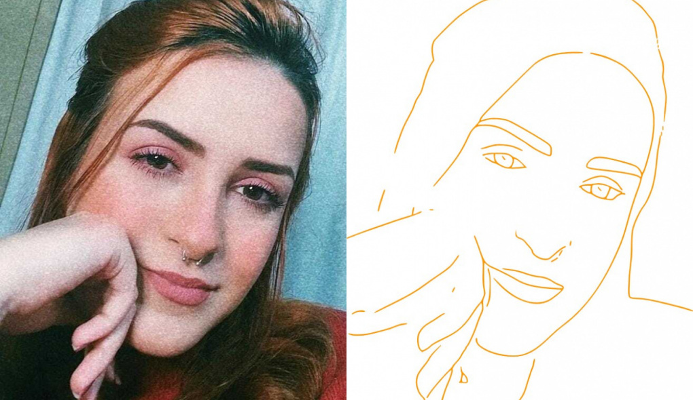

Olá, meu nome é Jéssica!
Tenho 21 anos e sou apaixonada por gatos!
Atualmente sou Padawan Analista Desenvolvedora
na Hbsis.
Esse site foi criado para armazenar e publicar
meus trabalhos feitos apartir do conhecimento
adquirido no curso de Cobol oferecido pela Hbsis
e administrado pela ProWay.
Confira também o meu currículo!